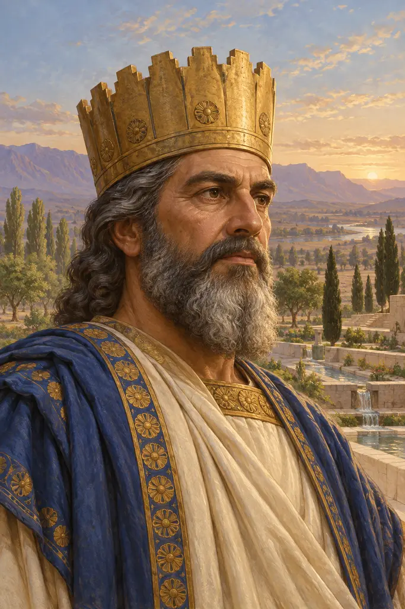
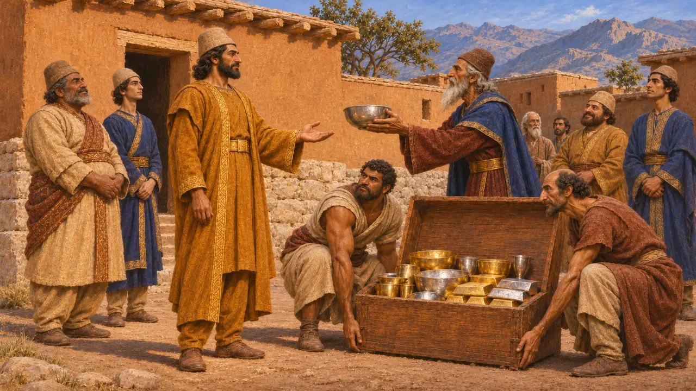
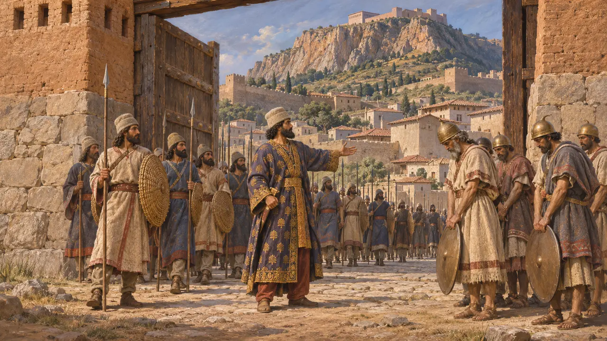
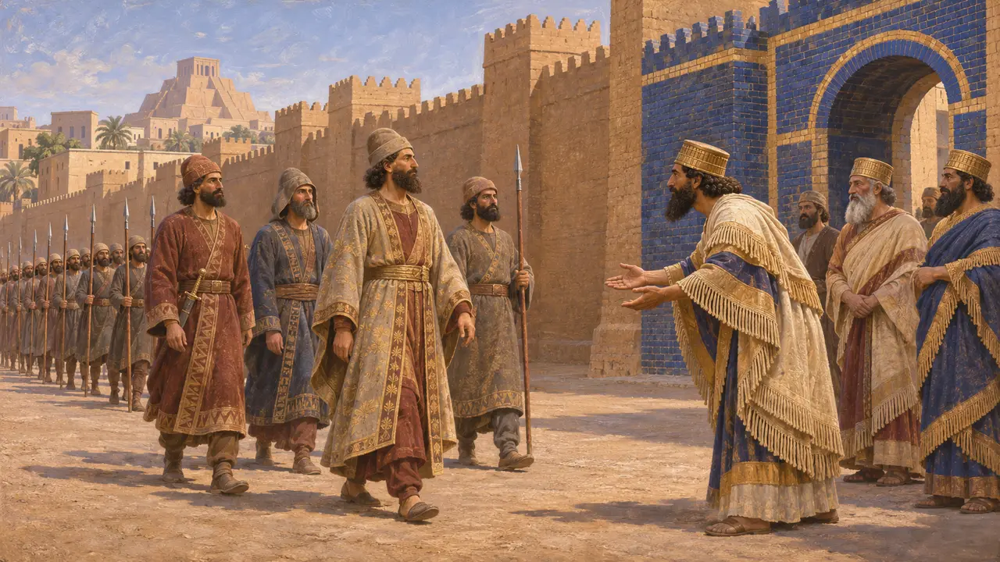
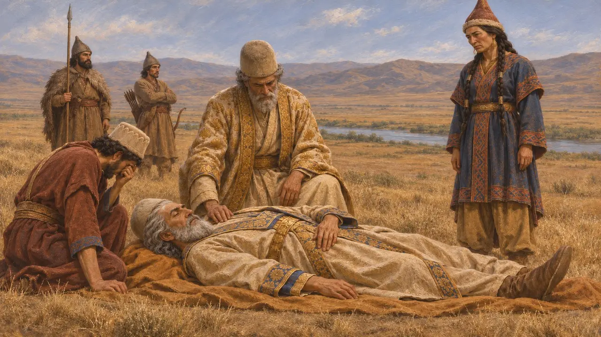

Kyros der Große
König von Anschan und Gründer des Perserreichs, regierte etwa 559-530 v. Chr.
Im Spiel: Level 1: Das Grab des Gründers, Level 2: Der Lanzenträger, Level 4: Die Terrasse, Mykale
Kyros II., König von Anschan in der Persis, stürzte um 550 den medischen König, eroberte dann Lydien und die griechischen Städte im Westen Kleinasiens und nahm 539 Babylon ein. Durch diese Eroberungen wurden die Perser zu Herrschern über das größte Reich, das der Vordere Orient bis dahin gesehen hatte. Er gründete Pasargadae, starb 530, und sein steinernes Grab steht dort bis heute.
Im Spiel: Das Pasargadae-Level spielt im Jahr 530, dem Todesjahr des Kyros. Die Szene, in der Kyros Dareios einen Auftrag erteilt, ist dramatisiert; Herodot (1.209) berichtet nur, Kyros habe geträumt, der junge Dareios werde einst über Asien und Europa herrschen.

König von Anschan
Zeitgenössisch belegtAuf dem Tonzylinder, der für ihn in Babylon verfasst wurde, nennt sich Kyros Sohn des Kambyses, Enkel des Kyros und Nachkomme des Teispes, allesamt Könige von Anschan. Anschan war der alte elamische Name einer Stadt und Region im Hochland der Persis. Die Nabonid-Chronik berichtet, dass sich das Heer des medischen Königs Astyages empörte und ihn an Kyros auslieferte. Kyros nahm daraufhin Ekbatana ein und brachte dessen Silber und Gold nach Anschan, um 550 v. Chr.
Cyrus Cylinder; Nabonidus Chronicle (ABC 7)

Kroisos, Sardes und die ionischen Städte
Antiker BerichtHerodot erzählt, wie Kroisos von Lydien den Fluss Halys überschritt, um Kyros anzugreifen, und bei Pteria eine unentschiedene Schlacht schlug. Kyros folgte ihm daraufhin in seine Heimat, belagerte Sardes und nahm es ein. Die Feldherren des Kyros, zuerst Mazares und dann der Meder Harpagos, unterwarfen anschließend die griechischen Städte Ioniens und Kariens. Das Datum ist unsicher: Ein Eintrag einer babylonischen Chronik zum Jahr 547 wurde einst so gelesen, als nenne er Lydien, doch der Name ist dort beschädigt.
Herodotus 1.75-91, 1.141-176

Die Einnahme Babylons
Zeitgenössisch belegtDie Nabonid-Chronik verzeichnet für das Jahr 539 eine Schlacht bei Opis und die kampflose Einnahme von Sippar. Zwei Tage später zog das Heer des Kyros unter Ugbaru in Babylon ein, und Kyros selbst folgte etwa zwei Wochen danach. Der Kyros-Zylinder, von babylonischen Schreibern verfasst, berichtet, Marduk habe ihn erwählt, um einen pflichtvergessenen König abzulösen, und er habe Götter und Verschleppte in ihre Heimat zurückgeführt. Es handelt sich um königliche Propaganda im alten mesopotamischen Stil, nicht um eine Verbriefung von Rechten.
Nabonidus Chronicle (ABC 7); Cyrus Cylinder

Wie Kyros starb
UmstrittenBabylonische Urkunden zeigen, dass seine Herrschaft 530 endete, doch keine Quelle berichtet, wie. Herodot erzählt, er sei im Kampf gegen die Massageten jenseits des Araxes gefallen und ihre Königin Tomyris habe sein abgeschlagenes Haupt in Blut getaucht. Herodot räumt ein, dass es auch andere Fassungen gab. Bei Ktesias stirbt er an einer Wunde aus dem Kampf gegen die Derbiker, bei Xenophon friedlich zu Hause im Kreis seiner Söhne.
Herodotus 1.201-214; Ctesias, Persica; Xenophon, Cyropaedia 8.7
Das ausgesetzte Kind
Spätere LegendeHerodot berichtet, Astyages habe, durch Träume gewarnt, befohlen, seinen kleinen Enkel Kyros zu töten. Der Hirte, der das Kind aussetzen sollte, zog es stattdessen auf, und mit etwa zehn Jahren wurde der Knabe an seinem königlichen Gebaren beim Spiel erkannt. Herodot sagt, er habe diese Fassung aus mehreren ausgewählt, die die Perser erzählten. Sie folgt einem alten Muster von Erzählungen über einen ausgesetzten künftigen König, und Ktesias bestritt, dass Kyros überhaupt mit Astyages verwandt war.
Herodotus 1.95, 1.107-130; Ctesias, Persica
Quellen
- Cyrus Cylinder
- Nabonidus Chronicle (ABC 7)
- Herodotus 1.95-214
- Arrian, Anabasis 6.29
- P. Briant, From Cyrus to Alexander, 2002
- D. Stronach, Pasargadae, 1978